| Strategy | Runs | Resilience Score | Std Dev | Range | Pass Rate | Mean Recovery (ms) | Median Recovery (ms) | P95 Recovery (ms) |
|---|---|---|---|---|---|---|---|---|
| adversarial | 4 | 100.0 | ±0.0 | 100–100 | 100% | n/a | n/a | n/a |
| baseline | 4 | 100.0 | ±0.0 | 100–100 | 100% | n/a | n/a | n/a |
| best-fit | 4 | 100.0 | ±0.0 | 100–100 | 100% | n/a | n/a | n/a |
| colocate | 4 | 100.0 | ±0.0 | 100–100 | 100% | n/a | n/a | n/a |
| default | 4 | 100.0 | ±0.0 | 100–100 | 100% | n/a | n/a | n/a |
| dependency-aware | 4 | 100.0 | ±0.0 | 100–100 | 100% | n/a | n/a | n/a |
| random | 4 | 100.0 | ±0.0 | 100–100 | 100% | n/a | n/a | n/a |
| spread | 4 | 100.0 | ±0.0 | 100–100 | 100% | n/a | n/a | n/a |
Note: Resilience scores blend LitmusChaos probe verdicts (25%) with continuous metrics: recovery speed (25%), latency preservation (25%), error rate (15%), and throughput preservation (10%). This produces finer-grained differentiation than probe verdicts alone.
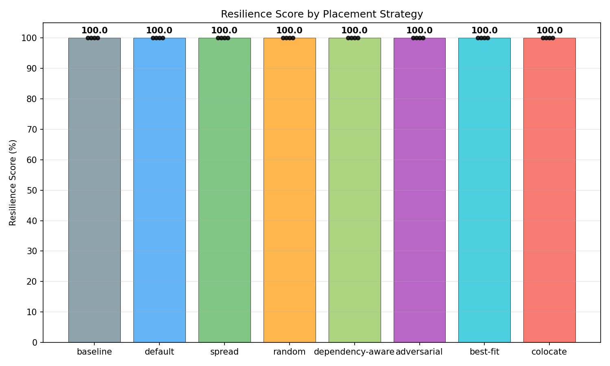
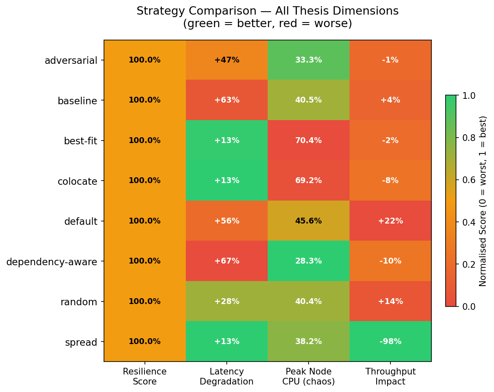
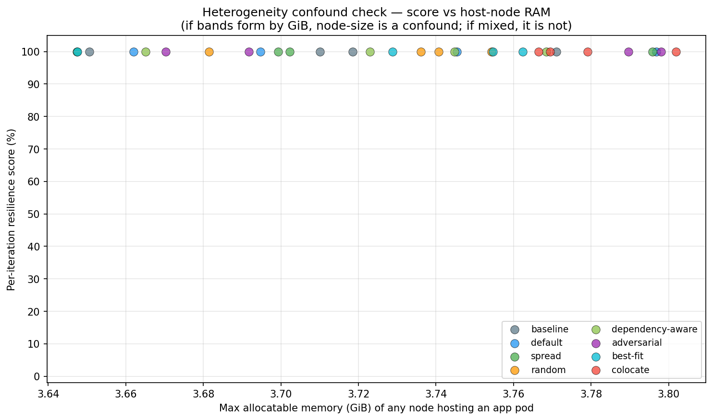
| Strategy | Iter 1 | Iter 2 | Iter 3 | Iter 4 |
|---|---|---|---|---|
| adversarial | 100 337.7s | 100 337.6s | 100 338.3s | 100 337.6s |
| baseline | 100 217.9s | 100 217.6s | 100 217.3s | 100 218.8s |
| best-fit | 100 339.3s | 100 337.9s | 100 337.7s | 100 337.4s |
| colocate | 100 337.7s | 100 336.9s | 100 337.1s | 100 337.9s |
| default | 100 335.6s | 100 337.9s | 100 338.4s | 100 338.6s |
| dependency-aware | 100 337.0s | 100 337.0s | 100 337.7s | 100 339.1s |
| random | 100 337.7s | 100 338.3s | 100 337.6s | 100 388.5s |
| spread | 100 340.2s | 100 337.9s | 100 338.0s | 100 338.5s |
Each cell shows resilience score and iteration duration. Cells: ≥80 50–79 <50 ⚠ = pre-chaos baseline was degraded (score may reflect accumulated damage, not strategy resilience).
Pod-to-node assignments per strategy. Color groups pods on the same node.
| Deployment | adversarial | best-fit | colocate | dependency-aware | random | spread |
|---|---|---|---|---|---|---|
| adservice | worker4 | worker2 | worker4 | worker1 | worker1 | worker1 |
| cartservice | worker4 | worker2 | worker4 | worker1 | worker1 | worker2 |
| checkoutservice | worker4 | worker2 | worker4 | worker2 | worker3 | worker3 |
| currencyservice | worker3 | worker2 | worker4 | worker2 | worker2 | worker4 |
| emailservice | worker1 | worker2 | worker4 | worker4 | worker2 | worker1 |
| frontend | worker2 | worker2 | worker4 | worker1 | worker2 | worker2 |
| paymentservice | worker3 | worker2 | worker4 | worker4 | worker1 | worker3 |
| productcatalogservice | worker1 | worker2 | worker4 | worker2 | worker1 | worker4 |
| recommendationservice | worker4 | worker2 | worker4 | worker3 | worker4 | worker1 |
| redis-cart | worker4 | worker2 | worker4 | worker3 | worker1 | worker2 |
| shippingservice | worker2 | worker1 | worker4 | worker3 | worker1 | worker3 |
Time from pod deletion to pod ready, measured via the Kubernetes Watch API. Lower recovery time indicates better fault tolerance under the given placement.
HTTP route latency measured via kubectl exec using python3/wget probes.
Degradation from pre-chaos to during-chaos quantifies fault impact on service communication.
| Strategy | Route | Pre-Chaos Mean (ms) | During Chaos Mean (ms) | During Chaos P95 (ms) | During Chaos Cross-Pod Stddev (ms) | Worst Vantage Point (ms) | Post-Chaos Mean (ms) | Errors During Chaos |
|---|---|---|---|---|---|---|---|---|
| adversarial | / | 326.2 | 347.8 | 645.9 | 81.8 | 1452.2 | 337.7 | 0 |
| adversarial | /_healthz | 120.0 | 128.1 | 198.5 | 57.1 | 1063.7 | 94.9 | 0 |
| adversarial | /cart | 237.5 | 258.5 | 546.5 | 88.5 | 1362.5 | 217.2 | 0 |
| adversarial | /product/OLJCESPC7Z | 260.1 | 316.5 | 691.9 | 57.7 | 1445.2 | 273.2 | 0 |
| adversarial | cartservice->redis-cart | 4.4 | 8.5 +94% | 41.8 | 10.4 | 86.9 | 9.1 | 0 |
| adversarial | checkoutservice->cartservice,frontend->cartservice | 15.3 | 11.1 | 42.4 | 12.7 | 85.0 | 11.8 | 0 |
| adversarial | checkoutservice->currencyservice,frontend->currencyservice | 10.7 | 11.3 | 43.2 | 12.3 | 86.4 | 10.7 | 0 |
| adversarial | checkoutservice->emailservice | 20.4 | 15.9 | 52.7 | 15.3 | 86.7 | 14.7 | 0 |
| adversarial | checkoutservice->paymentservice | 6.5 | 11.2 +73% | 43.8 | 10.6 | 87.7 | 11.7 | 0 |
| adversarial | checkoutservice->productcatalogservice,frontend->productcatalogservice,recommendationservice->productcatalogservice | 21.3 | 10.2 | 43.4 | 12.6 | 87.7 | 1.4 | 0 |
| adversarial | checkoutservice->shippingservice,frontend->shippingservice | 13.0 | 15.8 | 44.7 | 18.6 | 92.3 | 16.4 | 0 |
| adversarial | frontend->adservice | 1.6 | 8.6 +430% | 42.0 | 9.1 | 83.2 | 18.9 | 0 |
| adversarial | frontend->checkoutservice | 16.1 | 13.1 | 43.2 | 15.2 | 90.8 | 13.2 | 0 |
| adversarial | frontend->recommendationservice | 4.3 | 13.2 +203% | 42.9 | 16.1 | 87.5 | 9.6 | 0 |
| adversarial | loadgenerator->frontend | 12.8 | 7.3 | 41.9 | 8.6 | 87.9 | 4.5 | 0 |
| baseline | / | 428.6 | 601.0 | 1107.1 | 228.7 | 1641.7 | 547.0 | 0 |
| baseline | /_healthz | 150.9 | 119.7 | 200.5 | 74.1 | 391.7 | 99.3 | 0 |
| baseline | /cart | 247.1 | 389.7 +58% | 831.4 | 181.7 | 1608.8 | 375.4 | 0 |
| baseline | /product/OLJCESPC7Z | 358.8 | 440.9 | 708.8 | 128.2 | 1206.5 | 494.5 | 0 |
| baseline | cartservice->redis-cart | 11.2 | 15.6 | 42.7 | 19.1 | 84.1 | 8.0 | 0 |
| baseline | checkoutservice->cartservice,frontend->cartservice | 9.5 | 10.7 | 42.3 | 12.0 | 83.6 | 19.4 | 0 |
| baseline | checkoutservice->currencyservice,frontend->currencyservice | 10.1 | 6.9 | 35.3 | 6.6 | 82.6 | 9.2 | 0 |
| baseline | checkoutservice->emailservice | 7.3 | 11.1 +51% | 45.5 | 8.5 | 91.0 | 15.5 | 0 |
| baseline | checkoutservice->paymentservice | 10.9 | 17.3 +59% | 44.9 | 16.1 | 84.3 | 16.2 | 0 |
| baseline | checkoutservice->productcatalogservice,frontend->productcatalogservice,recommendationservice->productcatalogservice | 14.6 | 9.6 | 42.6 | 9.9 | 88.2 | 15.8 | 0 |
| baseline | checkoutservice->shippingservice,frontend->shippingservice | 4.0 | 10.8 +174% | 43.8 | 11.8 | 89.4 | 20.0 | 0 |
| baseline | frontend->adservice | 10.2 | 11.4 | 45.5 | 12.8 | 92.7 | 2.9 | 0 |
| baseline | frontend->checkoutservice | 19.8 | 11.1 | 38.5 | 8.2 | 84.6 | 4.1 | 0 |
| baseline | frontend->recommendationservice | 3.9 | 8.5 +117% | 42.4 | 8.2 | 105.7 | 3.9 | 0 |
| baseline | loadgenerator->frontend | 2.5 | 14.7 +490% | 42.2 | 14.1 | 86.7 | 2.9 | 0 |
| best-fit | / | 169.0 | 278.3 +65% | 755.3 | 119.5 | 1602.8 | 266.0 | 0 |
| best-fit | /_healthz | 89.7 | 101.8 | 146.9 | 56.0 | 1534.6 | 101.6 | 0 |
| best-fit | /cart | 142.9 | 246.4 +72% | 731.3 | 106.2 | 2090.4 | 181.8 | 0 |
| best-fit | /product/OLJCESPC7Z | 229.6 | 219.8 | 386.8 | 55.0 | 917.1 | 205.2 | 0 |
| best-fit | cartservice->redis-cart | 2.9 | 7.1 +148% | 31.2 | 7.1 | 76.8 | 7.8 | 0 |
| best-fit | checkoutservice->cartservice,frontend->cartservice | 9.7 | 6.8 | 31.6 | 7.4 | 91.3 | 10.2 | 0 |
| best-fit | checkoutservice->currencyservice,frontend->currencyservice | 17.0 | 5.6 | 30.1 | 5.7 | 77.4 | 3.9 | 0 |
| best-fit | checkoutservice->emailservice | 12.0 | 7.0 | 38.0 | 6.3 | 88.6 | 9.1 | 0 |
| best-fit | checkoutservice->paymentservice | 5.7 | 5.7 | 21.8 | 5.2 | 79.1 | 5.0 | 0 |
| best-fit | checkoutservice->productcatalogservice,frontend->productcatalogservice,recommendationservice->productcatalogservice | 17.4 | 12.1 | 38.6 | 14.4 | 489.3 | 5.0 | 0 |
| best-fit | checkoutservice->shippingservice,frontend->shippingservice | 5.6 | 10.8 +91% | 37.1 | 10.3 | 78.5 | 10.8 | 0 |
| best-fit | frontend->adservice | 10.9 | 6.7 | 36.0 | 7.3 | 78.5 | 4.8 | 0 |
| best-fit | frontend->checkoutservice | 9.2 | 6.8 | 35.0 | 7.4 | 77.3 | 8.8 | 0 |
| best-fit | frontend->recommendationservice | 11.4 | 7.0 | 39.3 | 7.4 | 80.6 | 9.8 | 0 |
| best-fit | loadgenerator->frontend | 4.6 | 8.6 +88% | 39.4 | 9.9 | 83.1 | 8.3 | 0 |
| colocate | / | 227.2 | 196.8 | 522.0 | 56.5 | 1122.3 | 274.3 | 0 |
| colocate | /_healthz | 80.6 | 85.8 | 134.9 | 39.2 | 199.9 | 84.0 | 0 |
| colocate | /cart | 174.8 | 154.9 | 250.8 | 45.6 | 939.1 | 146.9 | 0 |
| colocate | /product/OLJCESPC7Z | 194.3 | 244.1 | 630.1 | 44.9 | 1053.1 | 284.4 | 0 |
| colocate | cartservice->redis-cart | 11.4 | 10.9 | 40.1 | 10.1 | 78.8 | 8.6 | 0 |
| colocate | checkoutservice->cartservice,frontend->cartservice | 7.7 | 7.5 | 37.6 | 7.5 | 82.7 | 7.2 | 0 |
| colocate | checkoutservice->currencyservice,frontend->currencyservice | 6.3 | 4.9 | 24.4 | 4.7 | 79.7 | 3.2 | 0 |
| colocate | checkoutservice->emailservice | 9.4 | 6.7 | 31.3 | 7.2 | 83.5 | 6.9 | 0 |
| colocate | checkoutservice->paymentservice | 7.4 | 4.7 | 23.0 | 4.5 | 64.2 | 14.5 | 0 |
| colocate | checkoutservice->productcatalogservice,frontend->productcatalogservice,recommendationservice->productcatalogservice | 4.3 | 9.7 +128% | 36.6 | 10.6 | 84.0 | 6.0 | 0 |
| colocate | checkoutservice->shippingservice,frontend->shippingservice | 3.8 | 5.3 | 20.9 | 4.8 | 78.1 | 12.1 | 0 |
| colocate | frontend->adservice | 7.3 | 5.3 | 35.0 | 5.9 | 75.6 | 4.2 | 0 |
| colocate | frontend->checkoutservice | 3.5 | 6.8 +94% | 37.1 | 7.7 | 86.3 | 4.7 | 0 |
| colocate | frontend->recommendationservice | 6.0 | 6.2 | 35.5 | 6.5 | 85.7 | 5.3 | 0 |
| colocate | loadgenerator->frontend | 4.0 | 5.5 | 35.3 | 6.0 | 81.0 | 6.0 | 0 |
| default | / | 479.8 | 504.6 | 905.5 | 108.8 | 1314.6 | 349.0 | 0 |
| default | /_healthz | 91.8 | 106.4 | 159.1 | 35.5 | 218.4 | 87.9 | 0 |
| default | /cart | 329.0 | 319.9 | 555.1 | 80.5 | 1404.9 | 231.0 | 0 |
| default | /product/OLJCESPC7Z | 326.5 | 361.6 | 916.5 | 64.8 | 1426.4 | 344.2 | 0 |
| default | cartservice->redis-cart | 10.1 | 10.5 | 41.4 | 11.4 | 83.5 | 16.6 | 0 |
| default | checkoutservice->cartservice,frontend->cartservice | 2.0 | 7.0 +253% | 39.7 | 7.8 | 91.3 | 5.1 | 0 |
| default | checkoutservice->currencyservice,frontend->currencyservice | 14.5 | 5.8 | 37.4 | 6.5 | 85.5 | 9.0 | 0 |
| default | checkoutservice->emailservice | 12.9 | 8.1 | 42.7 | 7.5 | 86.5 | 2.0 | 0 |
| default | checkoutservice->paymentservice | 3.3 | 9.4 +187% | 44.0 | 9.9 | 87.5 | 8.4 | 0 |
| default | checkoutservice->productcatalogservice,frontend->productcatalogservice,recommendationservice->productcatalogservice | 8.2 | 10.6 | 42.9 | 10.6 | 84.6 | 3.6 | 0 |
| default | checkoutservice->shippingservice,frontend->shippingservice | 11.5 | 9.1 | 40.3 | 9.3 | 90.6 | 12.4 | 0 |
| default | frontend->adservice | 15.1 | 7.1 | 37.5 | 6.5 | 82.7 | 11.3 | 0 |
| default | frontend->checkoutservice | 4.8 | 9.4 +96% | 42.2 | 8.5 | 88.1 | 3.4 | 0 |
| default | frontend->recommendationservice | 2.4 | 5.1 +115% | 13.1 | 5.5 | 87.3 | 11.1 | 0 |
| default | loadgenerator->frontend | 2.0 | 7.9 +301% | 40.9 | 7.4 | 84.3 | 15.0 | 0 |
| dependency-aware | / | 270.3 | 305.9 | 666.3 | 108.7 | 1407.2 | 205.7 | 0 |
| dependency-aware | /_healthz | 91.8 | 81.3 | 153.2 | 40.6 | 289.4 | 76.0 | 0 |
| dependency-aware | /cart | 213.1 | 219.8 | 404.7 | 59.7 | 989.2 | 196.5 | 0 |
| dependency-aware | /product/OLJCESPC7Z | 192.4 | 258.7 | 572.8 | 65.8 | 1309.0 | 207.2 | 0 |
| dependency-aware | cartservice->redis-cart | 17.3 | 9.2 | 42.7 | 11.2 | 90.6 | 8.2 | 0 |
| dependency-aware | checkoutservice->cartservice,frontend->cartservice | 1.9 | 10.1 +437% | 42.5 | 10.3 | 84.3 | 5.3 | 0 |
| dependency-aware | checkoutservice->currencyservice,frontend->currencyservice | 4.9 | 9.9 +102% | 42.0 | 10.0 | 87.8 | 8.5 | 0 |
| dependency-aware | checkoutservice->emailservice | 7.8 | 5.0 | 40.0 | 5.2 | 87.5 | 5.0 | 0 |
| dependency-aware | checkoutservice->paymentservice | 11.2 | 8.9 | 42.5 | 10.7 | 87.8 | 5.3 | 0 |
| dependency-aware | checkoutservice->productcatalogservice,frontend->productcatalogservice,recommendationservice->productcatalogservice | 14.2 | 6.1 | 41.9 | 6.4 | 85.8 | 1.9 | 0 |
| dependency-aware | checkoutservice->shippingservice,frontend->shippingservice | 4.8 | 9.2 +94% | 43.8 | 9.5 | 88.4 | 1.5 | 0 |
| dependency-aware | frontend->adservice | 9.8 | 8.3 | 42.4 | 9.5 | 90.1 | 3.2 | 0 |
| dependency-aware | frontend->checkoutservice | 6.6 | 5.6 | 39.6 | 5.7 | 83.8 | 1.9 | 0 |
| dependency-aware | frontend->recommendationservice | 1.6 | 9.3 +497% | 42.0 | 9.5 | 82.9 | 5.0 | 0 |
| dependency-aware | loadgenerator->frontend | 4.6 | 6.0 | 41.3 | 6.7 | 88.1 | 11.6 | 0 |
| random | / | 433.5 | 383.9 | 785.7 | 163.1 | 1423.6 | 338.9 | 0 |
| random | /_healthz | 99.7 | 95.5 | 149.9 | 58.3 | 210.5 | 100.4 | 0 |
| random | /cart | 325.0 | 319.7 | 619.2 | 114.0 | 927.2 | 291.2 | 0 |
| random | /product/OLJCESPC7Z | 411.2 | 357.1 | 793.2 | 114.1 | 1406.5 | 270.8 | 0 |
| random | cartservice->redis-cart | 3.6 | 9.3 +160% | 42.5 | 9.5 | 83.8 | 10.8 | 0 |
| random | checkoutservice->cartservice,frontend->cartservice | 9.5 | 12.6 | 43.4 | 15.2 | 88.3 | 11.6 | 0 |
| random | checkoutservice->currencyservice,frontend->currencyservice | 12.6 | 8.0 | 42.9 | 8.0 | 91.8 | 11.9 | 0 |
| random | checkoutservice->emailservice | 9.3 | 7.1 | 42.2 | 7.2 | 85.2 | 13.2 | 0 |
| random | checkoutservice->paymentservice | 7.4 | 10.8 | 42.5 | 12.2 | 84.8 | 8.9 | 0 |
| random | checkoutservice->productcatalogservice,frontend->productcatalogservice,recommendationservice->productcatalogservice | 7.8 | 11.0 | 43.9 | 10.1 | 89.5 | 7.2 | 0 |
| random | checkoutservice->shippingservice,frontend->shippingservice | 15.4 | 10.1 | 42.7 | 11.5 | 88.6 | 2.9 | 0 |
| random | frontend->adservice | 7.3 | 8.2 | 41.6 | 8.6 | 82.9 | 8.8 | 0 |
| random | frontend->checkoutservice | 8.1 | 12.7 +56% | 42.0 | 14.7 | 82.9 | 3.0 | 0 |
| random | frontend->recommendationservice | 3.3 | 7.8 +137% | 41.2 | 8.1 | 82.9 | 2.6 | 0 |
| random | loadgenerator->frontend | 6.3 | 10.2 +62% | 42.1 | 12.9 | 87.2 | 1.8 | 0 |
| spread | / | 265.6 | 366.2 | 840.1 | 104.1 | 2141.3 | 283.2 | 0 |
| spread | /_healthz | 111.1 | 113.7 | 166.7 | 36.6 | 234.2 | 105.9 | 0 |
| spread | /cart | 221.8 | 266.4 | 465.2 | 85.8 | 1727.2 | 239.8 | 0 |
| spread | /product/OLJCESPC7Z | 318.6 | 291.5 | 671.2 | 50.9 | 1522.0 | 230.6 | 0 |
| spread | cartservice->redis-cart | 14.3 | 8.6 | 42.8 | 8.2 | 83.0 | 8.7 | 0 |
| spread | checkoutservice->cartservice,frontend->cartservice | 5.3 | 12.6 +136% | 44.0 | 12.1 | 89.1 | 10.4 | 0 |
| spread | checkoutservice->currencyservice,frontend->currencyservice | 10.1 | 15.7 +55% | 44.1 | 19.5 | 91.1 | 14.4 | 0 |
| spread | checkoutservice->emailservice | 11.2 | 12.5 | 42.9 | 14.8 | 90.2 | 13.4 | 0 |
| spread | checkoutservice->paymentservice | 7.8 | 11.5 | 44.0 | 10.5 | 94.9 | 11.6 | 0 |
| spread | checkoutservice->productcatalogservice,frontend->productcatalogservice,recommendationservice->productcatalogservice | 8.5 | 9.9 | 42.5 | 11.4 | 90.4 | 22.3 | 0 |
| spread | checkoutservice->shippingservice,frontend->shippingservice | 15.2 | 11.5 | 42.0 | 13.4 | 92.0 | 8.7 | 0 |
| spread | frontend->adservice | 18.1 | 14.1 | 42.9 | 15.0 | 86.0 | 7.8 | 0 |
| spread | frontend->checkoutservice | 14.3 | 14.0 | 44.6 | 17.0 | 88.4 | 11.2 | 0 |
| spread | frontend->recommendationservice | 10.4 | 9.8 | 41.7 | 12.5 | 84.5 | 10.7 | 0 |
| spread | loadgenerator->frontend | 25.6 | 16.6 | 43.9 | 21.4 | 90.0 | 7.9 | 0 |
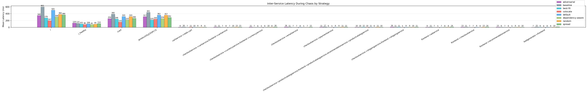
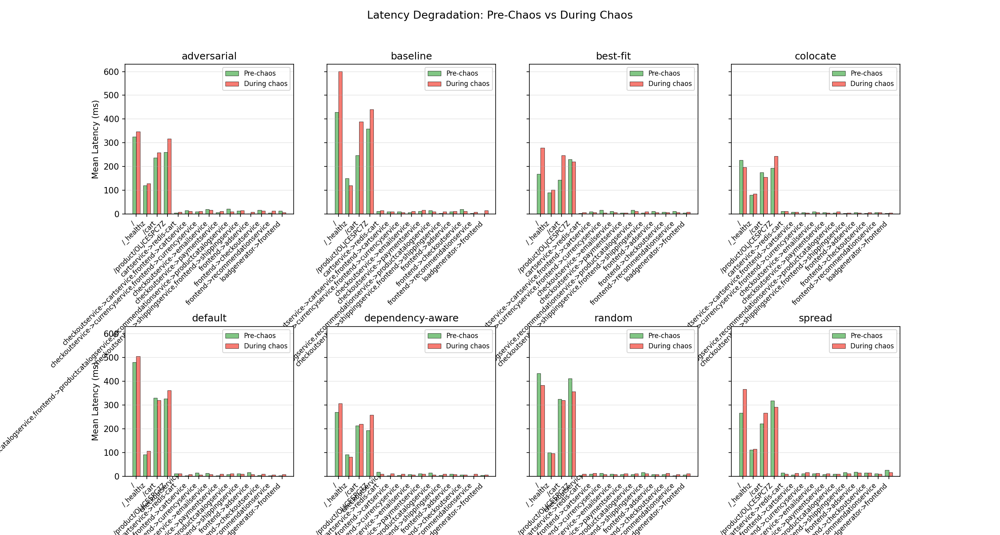
Node-level CPU and memory utilization from the Kubernetes Metrics API. Only nodes hosting namespace pods are included — idle nodes are excluded so placement strategies produce distinct resource profiles. Higher utilization during chaos correlates with resource contention from co-location.
| Strategy | Phase | Mean CPU (%) | CPU Stddev (%) | Peak Node CPU (%) | Mean Memory (%) | Mem Stddev (%) | Peak Node Mem (%) | Samples |
|---|---|---|---|---|---|---|---|---|
| adversarial (4 used) | pre-chaos | 18.0 | 4.0 | 31.8 | 66.6 | 0.2 | 72.4 | 13 |
| adversarial (4 used) | during-chaos | 20.6 | 2.1 | 33.3 | 67.3 | 0.2 | 72.5 | 66 |
| adversarial (4 used) | post-chaos | 20.6 | 1.3 | 29.0 | 67.5 | 0.1 | 72.2 | 12 |
| baseline (4 used) | pre-chaos | 19.5 | 2.6 | 36.7 | 65.3 | 0.4 | 69.0 | 13 |
| baseline (4 used) | during-chaos | 21.1 | 1.8 | 40.5 | 66.0 | 0.2 | 69.8 | 43 |
| baseline (4 used) | post-chaos | 19.5 | 1.1 | 34.7 | 65.7 | 0.1 | 69.4 | 11 |
| best-fit (3 used) | pre-chaos | 22.1 | 5.0 | 69.4 | 66.8 | 0.3 | 70.0 | 13 |
| best-fit (3 used) | during-chaos | 20.7 | 2.9 | 70.4 | 67.3 | 0.2 | 70.6 | 66 |
| best-fit (3 used) | post-chaos | 23.4 | 1.5 | 66.8 | 67.2 | 0.1 | 70.2 | 12 |
| colocate (4 used) | pre-chaos | 17.0 | 3.7 | 69.5 | 65.8 | 0.2 | 73.5 | 13 |
| colocate (4 used) | during-chaos | 18.9 | 0.9 | 69.2 | 66.2 | 0.2 | 73.6 | 66 |
| colocate (4 used) | post-chaos | 18.6 | 1.0 | 66.8 | 65.8 | 0.1 | 72.5 | 12 |
| default (4 used) | pre-chaos | 17.8 | 4.5 | 46.1 | 65.6 | 0.2 | 71.0 | 13 |
| default (4 used) | during-chaos | 21.5 | 1.6 | 45.6 | 66.4 | 0.3 | 71.3 | 66 |
| default (4 used) | post-chaos | 20.3 | 0.5 | 42.7 | 65.8 | 0.1 | 71.0 | 12 |
| dependency-aware (4 used) | pre-chaos | 18.6 | 1.9 | 37.8 | 66.5 | 0.2 | 68.6 | 13 |
| dependency-aware (4 used) | during-chaos | 20.4 | 1.2 | 28.3 | 67.3 | 0.2 | 69.6 | 66 |
| dependency-aware (4 used) | post-chaos | 21.1 | 1.7 | 31.7 | 67.0 | 0.1 | 69.4 | 12 |
| random (4 used) | pre-chaos | 20.6 | 1.1 | 43.3 | 66.4 | 0.2 | 69.2 | 13 |
| random (4 used) | during-chaos | 19.9 | 1.4 | 40.4 | 67.1 | 0.2 | 69.4 | 67 |
| random (4 used) | post-chaos | 18.7 | 0.9 | 34.9 | 66.7 | 0.1 | 69.0 | 11 |
| spread (4 used) | pre-chaos | 20.0 | 2.8 | 37.9 | 66.0 | 0.2 | 68.5 | 13 |
| spread (4 used) | during-chaos | 22.0 | 1.7 | 38.2 | 66.8 | 0.3 | 68.5 | 66 |
| spread (4 used) | post-chaos | 21.1 | 0.7 | 33.3 | 66.4 | 0.1 | 68.2 | 12 |
Note: Metrics are computed only for nodes that host at least one namespace pod. Idle nodes are excluded so placement strategies (colocate vs spread) produce visibly different resource profiles.
| Strategy | Worker Node | Mean CPU (%) | Max CPU (%) | Mean Memory (%) |
|---|---|---|---|---|
| adversarial | worker1 | 20.0 | 23.3 | 65.8 |
| adversarial | worker2 | 20.7 | 27.4 | 63.9 |
| adversarial | worker3 | 14.6 | 25.6 | 67.3 |
| adversarial | worker4 | 27.0 | 33.3 | 72.2 |
| baseline | worker1 | 35.5 | 40.5 | 66.9 |
| baseline | worker2 | 8.4 | 13.0 | 62.6 |
| baseline | worker3 | 29.0 | 36.9 | 69.3 |
| baseline | worker4 | 11.4 | 17.5 | 65.2 |
| best-fit | worker1 | 5.0 | 16.2 | 64.3 |
| best-fit | worker2 | 63.6 | 70.4 | 70.2 |
| best-fit | worker3 | 4.1 | 10.5 | 67.8 |
| best-fit | worker4 | 5.7 | 14.5 | 66.7 |
| colocate | worker1 | 3.5 | 5.7 | 64.7 |
| colocate | worker2 | 3.8 | 6.1 | 59.3 |
| colocate | worker3 | 3.9 | 6.7 | 68.0 |
| colocate | worker4 | 64.3 | 69.2 | 72.8 |
| default | worker1 | 23.7 | 28.1 | 66.2 |
| default | worker2 | 7.8 | 13.6 | 62.5 |
| default | worker3 | 42.4 | 45.6 | 71.0 |
| default | worker4 | 12.0 | 19.8 | 65.9 |
| dependency-aware | worker1 | 24.9 | 28.3 | 69.2 |
| dependency-aware | worker2 | 18.4 | 22.3 | 63.8 |
| dependency-aware | worker3 | 21.8 | 24.7 | 67.2 |
| dependency-aware | worker4 | 16.5 | 22.6 | 69.0 |
| random | worker1 | 35.6 | 40.4 | 69.1 |
| random | worker2 | 6.2 | 10.5 | 63.9 |
| random | worker3 | 17.8 | 24.5 | 67.6 |
| random | worker4 | 20.1 | 25.0 | 67.6 |
| spread | worker1 | 33.5 | 38.2 | 68.1 |
| spread | worker2 | 25.6 | 30.5 | 66.3 |
| spread | worker3 | 8.8 | 12.4 | 66.0 |
| spread | worker4 | 20.0 | 24.5 | 66.8 |
Key insight: Under colocate, one worker absorbs all application CPU while others remain idle. The cluster-wide mean hides this hot-node effect. Under spread, load distributes more evenly across workers.
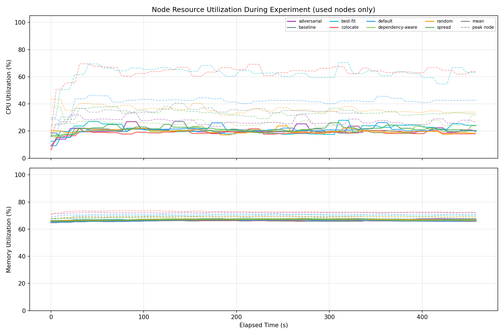
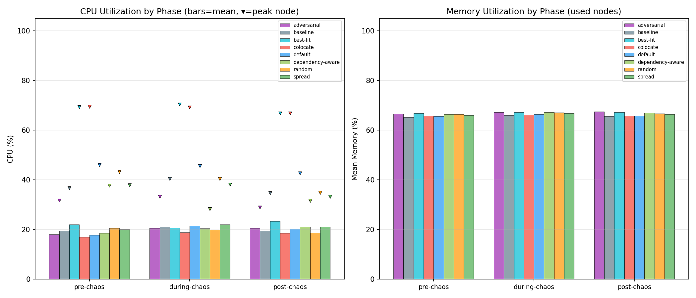
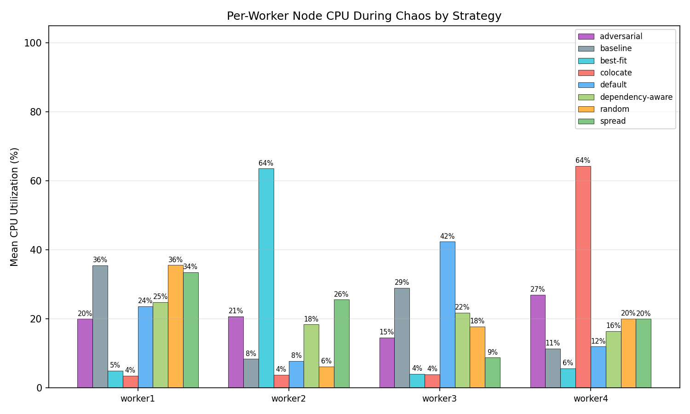
Redis ops/s and sequential disk read/write bandwidth measured via
redis-cli and dd. Throughput degradation during chaos
reflects shared I/O contention on co-located nodes.
| Strategy | Operation | Pre-Chaos Ops/s | During Chaos Ops/s | During Chaos Latency (ms) | During Chaos Bandwidth | During Chaos Cross-Node Stddev (ops/s) | Worst Node Min (ops/s) | Post-Chaos Ops/s |
|---|---|---|---|---|---|---|---|---|
| adversarial | redis-read | 11496.8 | 13685.2 | 0.93 | n/a | n/a | n/a | 9899.5 |
| adversarial | redis-write | 21213.7 | 18319.5 | 0.99 | n/a | n/a | n/a | 33322.8 |
| adversarial | disk-read | 34372.1 | 25239.2 | 0.07 | 1577.4 MB/s | 0.0 | 1845.3 | 25914.3 |
| adversarial | disk-write | 790.0 | 988.8 | 1.07 | 61.8 MB/s | 0.0 | 350.7 | 972.1 |
| baseline | redis-read | 18743.1 | 18830.7 | 1.10 | n/a | n/a | n/a | 12592.9 |
| baseline | redis-write | 29764.5 | 24364.1 | 0.65 | n/a | n/a | n/a | 23837.4 |
| baseline | disk-read | 29961.1 | 29998.1 | 0.05 | 1874.9 MB/s | 0.0 | 6237.4 | 31573.6 |
| baseline | disk-write | 723.6 | 736.3 | 1.44 | 46.0 MB/s | 0.0 | 380.0 | 746.2 |
| best-fit | redis-read | 5827.6 | 7478.6 | 2.46 | n/a | n/a | n/a | 4643.1 |
| best-fit | redis-write | 14189.9 | 10667.8 | 1.96 | n/a | n/a | n/a | 8147.4 |
| colocate | redis-read | 8364.1 | 10839.4 | 1.94 | n/a | n/a | n/a | 4019.9 |
| colocate | redis-write | 9585.6 | 11219.1 | 2.76 | n/a | n/a | n/a | 5646.1 |
| colocate | disk-read | 36976.6 | 33630.9 | 0.04 | 2101.9 MB/s | 0.0 | 7203.7 | 33311.1 |
| colocate | disk-write | 832.7 | 782.9 | 1.35 | 48.9 MB/s | 0.0 | 268.2 | 885.8 |
| default | redis-read | 16816.0 | 8787.6 -48% | 1.29 | n/a | n/a | n/a | 21108.2 |
| default | redis-write | 16361.5 | 9625.2 -41% | 1.37 | n/a | n/a | n/a | 19978.9 |
| default | disk-read | 35676.0 | 35733.5 | 0.04 | 2233.3 MB/s | 11078.6 | 5811.4 | 37954.4 |
| default | disk-write | 4141.8 | 4096.6 | 0.75 | 256.0 MB/s | 4627.0 | 402.1 | 3827.7 |
| dependency-aware | redis-read | 11969.1 | 14908.6 | 1.05 | n/a | n/a | n/a | 10240.4 |
| dependency-aware | redis-write | 24357.0 | 19914.9 | 0.88 | n/a | n/a | n/a | 11042.7 |
| dependency-aware | disk-read | 28404.5 | 32667.4 | 0.04 | 2041.7 MB/s | 0.0 | 4407.5 | 32867.9 |
| dependency-aware | disk-write | 751.8 | 882.4 | 1.17 | 55.2 MB/s | 0.0 | 554.7 | 818.9 |
| random | redis-read | 22371.5 | 20799.8 | 0.56 | n/a | n/a | n/a | 16285.8 |
| random | redis-write | 37218.7 | 20600.3 -45% | 0.47 | n/a | n/a | n/a | 31417.2 |
| random | disk-read | 33903.0 | 32521.6 | 0.04 | 2032.6 MB/s | 0.0 | 8466.1 | 28372.3 |
| random | disk-write | 852.3 | 841.5 | 1.23 | 52.6 MB/s | 0.0 | 474.6 | 784.5 |
| spread | redis-read | 2415.6 | 10071.0 | 1.45 | n/a | n/a | n/a | 11357.1 |
| spread | redis-write | 7892.4 | 14492.0 | 1.44 | n/a | n/a | n/a | 13239.7 |
| spread | disk-read | 28320.0 | 27629.4 | 0.06 | 1726.8 MB/s | 0.0 | 4600.1 | 24654.5 |
| spread | disk-write | 860.5 | 804.1 | 1.32 | 50.3 MB/s | 0.0 | 402.3 | 853.4 |
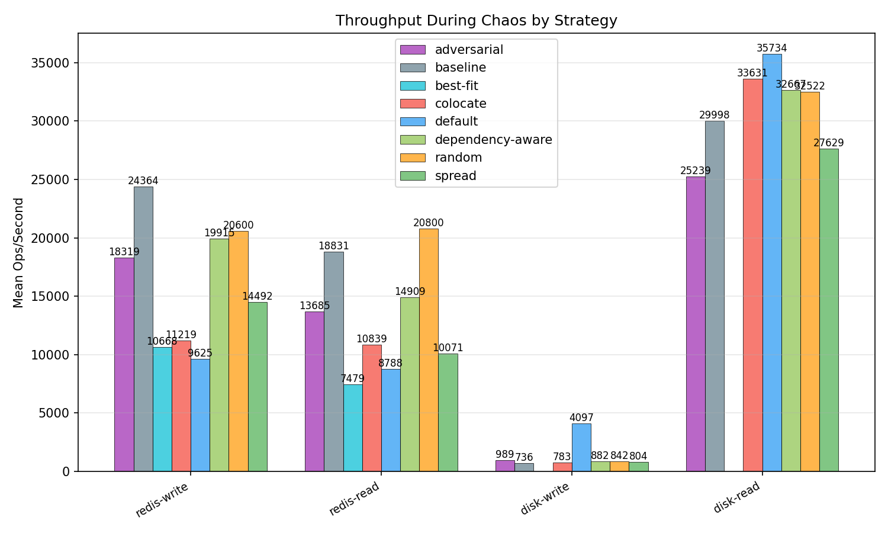
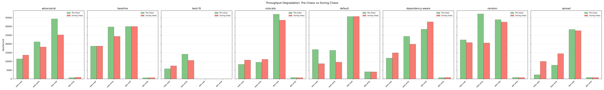
Pod readiness, CPU throttling, memory working set, and network receive bytes collected via PromQL. These metrics supplement the primary four dimensions.
| Strategy | Metric | Phase | Mean | Max | Samples |
|---|---|---|---|---|---|
| adversarial | apiserver_inflight | pre-chaos | 2.5000 | 3.0000 | 6 |
| adversarial | apiserver_inflight | during-chaos | 2.4848 | 4.0000 | 33 |
| adversarial | apiserver_inflight | post-chaos | 1.8333 | 2.0000 | 6 |
| adversarial | apiserver_request_p99 | pre-chaos | 0.6290 | 0.6368 | 6 |
| adversarial | apiserver_request_p99 | during-chaos | 0.7193 | 0.7789 | 33 |
| adversarial | apiserver_request_p99 | post-chaos | 0.7717 | 0.7757 | 6 |
| adversarial | conntrack_entries_per_node | pre-chaos | 15767.8333 | 17780.0000 | 6 |
| adversarial | conntrack_entries_per_node | during-chaos | 8938.3636 | 13396.0000 | 33 |
| adversarial | conntrack_entries_per_node | post-chaos | 8193.5000 | 8860.0000 | 6 |
| adversarial | container_oom_events_per_pod | pre-chaos | 0.0000 | 0.0000 | 6 |
| adversarial | container_oom_events_per_pod | during-chaos | 0.0000 | 0.0000 | 33 |
| adversarial | container_oom_events_per_pod | post-chaos | 0.0000 | 0.0000 | 6 |
| adversarial | coredns_cache_hit_rate_per_sec | pre-chaos | 372.6556 | 548.9333 | 6 |
| adversarial | coredns_cache_hit_rate_per_sec | during-chaos | 99.8850 | 112.9778 | 33 |
| adversarial | coredns_cache_hit_rate_per_sec | post-chaos | 88.3814 | 91.1333 | 6 |
| adversarial | coredns_cache_miss_rate_per_sec | pre-chaos | 7.0815 | 10.1556 | 6 |
| adversarial | coredns_cache_miss_rate_per_sec | during-chaos | 11.5832 | 13.0667 | 33 |
| adversarial | coredns_cache_miss_rate_per_sec | post-chaos | 9.8184 | 10.5776 | 6 |
| adversarial | coredns_request_count_per_sec | pre-chaos | 379.7333 | 556.7778 | 6 |
| adversarial | coredns_request_count_per_sec | during-chaos | 111.5025 | 125.4000 | 33 |
| adversarial | coredns_request_count_per_sec | post-chaos | 98.2072 | 100.0000 | 6 |
| adversarial | coredns_request_duration_p99 | pre-chaos | 0.0017 | 0.0019 | 6 |
| adversarial | coredns_request_duration_p99 | during-chaos | 0.0017 | 0.0020 | 33 |
| adversarial | coredns_request_duration_p99 | post-chaos | 0.0020 | 0.0020 | 6 |
| adversarial | cpu_throttling | pre-chaos | 2.5372 | 2.6031 | 6 |
| adversarial | cpu_throttling | during-chaos | 3.5483 | 4.6933 | 33 |
| adversarial | cpu_throttling | post-chaos | 4.6128 | 4.6698 | 6 |
| adversarial | cpu_usage | pre-chaos | 0.5195 | 0.5312 | 6 |
| adversarial | cpu_usage | during-chaos | 0.7223 | 0.9029 | 33 |
| adversarial | cpu_usage | post-chaos | 0.8767 | 0.8866 | 6 |
| adversarial | kubelet_pleg_relist_duration_p99 | pre-chaos | 0.0233 | 0.0247 | 6 |
| adversarial | kubelet_pleg_relist_duration_p99 | during-chaos | 0.0362 | 0.0582 | 33 |
| adversarial | kubelet_pleg_relist_duration_p99 | post-chaos | 0.0624 | 0.1112 | 6 |
| adversarial | kubelet_pod_start_p99 | pre-chaos | 2.4475 | 2.4475 | 6 |
| adversarial | kubelet_pod_start_p99 | during-chaos | 4.2563 | 4.7500 | 33 |
| adversarial | kubelet_pod_start_p99 | post-chaos | 2.4617 | 2.4650 | 6 |
| adversarial | kubelet_runtime_ops_p99 | pre-chaos | 31.4545 | 51.1527 | 6 |
| adversarial | kubelet_runtime_ops_p99 | during-chaos | 44.2474 | 53.1840 | 33 |
| adversarial | kubelet_runtime_ops_p99 | post-chaos | 51.5491 | 51.5566 | 6 |
| adversarial | memory_usage | pre-chaos | 828951893.3333 | 858050560.0000 | 6 |
| adversarial | memory_usage | during-chaos | 572901438.0606 | 884027392.0000 | 33 |
| adversarial | memory_usage | post-chaos | 469186560.0000 | 478027776.0000 | 6 |
| adversarial | network_packets | pre-chaos | 1346.8120 | 1394.4758 | 6 |
| adversarial | network_packets | during-chaos | 1824.4423 | 2235.9407 | 33 |
| adversarial | network_packets | post-chaos | 2204.9088 | 2231.0618 | 6 |
| adversarial | network_receive_bytes | pre-chaos | 255218.0662 | 266769.3159 | 6 |
| adversarial | network_receive_bytes | during-chaos | 357233.6537 | 438427.7365 | 33 |
| adversarial | network_receive_bytes | post-chaos | 426315.8234 | 432981.3659 | 6 |
| adversarial | network_transmit_bytes | pre-chaos | 239375.6070 | 247314.6348 | 6 |
| adversarial | network_transmit_bytes | during-chaos | 337287.2151 | 419005.5919 | 33 |
| adversarial | network_transmit_bytes | post-chaos | 408844.1732 | 413250.8783 | 6 |
| adversarial | node_cpu_pressure_some_per_node | pre-chaos | 1.1815 | 1.2212 | 6 |
| adversarial | node_cpu_pressure_some_per_node | during-chaos | 1.5181 | 1.8560 | 33 |
| adversarial | node_cpu_pressure_some_per_node | post-chaos | 1.8443 | 1.8562 | 6 |
| adversarial | node_io_pressure_some_per_node | pre-chaos | 0.0201 | 0.0204 | 6 |
| adversarial | node_io_pressure_some_per_node | during-chaos | 0.0187 | 0.0221 | 33 |
| adversarial | node_io_pressure_some_per_node | post-chaos | 0.0170 | 0.0176 | 6 |
| adversarial | node_memory_pressure_some_per_node | pre-chaos | 0.0000 | 0.0000 | 6 |
| adversarial | node_memory_pressure_some_per_node | during-chaos | 0.0000 | 0.0001 | 33 |
| adversarial | node_memory_pressure_some_per_node | post-chaos | 0.0000 | 0.0000 | 6 |
| adversarial | pod_ready_count | pre-chaos | 14.0000 | 14.0000 | 6 |
| adversarial | pod_ready_count | during-chaos | 17.6970 | 21.0000 | 33 |
| adversarial | pod_ready_count | post-chaos | 14.0000 | 14.0000 | 6 |
| adversarial | tcp_retransmit_rate_per_node | pre-chaos | 0.4148 | 0.7556 | 6 |
| adversarial | tcp_retransmit_rate_per_node | during-chaos | 0.7112 | 0.9333 | 33 |
| adversarial | tcp_retransmit_rate_per_node | post-chaos | 0.7259 | 0.9111 | 6 |
| baseline | apiserver_inflight | pre-chaos | 1.8571 | 3.0000 | 7 |
| baseline | apiserver_inflight | during-chaos | 2.5000 | 4.0000 | 20 |
| baseline | apiserver_inflight | post-chaos | 2.0000 | 2.0000 | 6 |
| baseline | apiserver_request_p99 | pre-chaos | 1.1429 | 1.1846 | 7 |
| baseline | apiserver_request_p99 | during-chaos | 1.2390 | 1.3614 | 20 |
| baseline | apiserver_request_p99 | post-chaos | 1.3620 | 1.3785 | 6 |
| baseline | conntrack_entries_per_node | pre-chaos | 11709.4286 | 13283.0000 | 7 |
| baseline | conntrack_entries_per_node | during-chaos | 6722.0500 | 10093.0000 | 20 |
| baseline | conntrack_entries_per_node | post-chaos | 5865.8333 | 6473.0000 | 6 |
| baseline | container_oom_events_per_pod | pre-chaos | 0.0000 | 0.0000 | 7 |
| baseline | container_oom_events_per_pod | during-chaos | 0.0000 | 0.0000 | 20 |
| baseline | container_oom_events_per_pod | post-chaos | 0.0000 | 0.0000 | 6 |
| baseline | coredns_cache_hit_rate_per_sec | pre-chaos | 235.9397 | 374.0000 | 7 |
| baseline | coredns_cache_hit_rate_per_sec | during-chaos | 81.5031 | 95.3781 | 20 |
| baseline | coredns_cache_hit_rate_per_sec | post-chaos | 76.2340 | 78.2667 | 6 |
| baseline | coredns_cache_miss_rate_per_sec | pre-chaos | 7.4793 | 8.8220 | 7 |
| baseline | coredns_cache_miss_rate_per_sec | during-chaos | 11.0403 | 12.8887 | 20 |
| baseline | coredns_cache_miss_rate_per_sec | post-chaos | 9.9630 | 10.9333 | 6 |
| baseline | coredns_request_count_per_sec | pre-chaos | 243.4190 | 382.0889 | 7 |
| baseline | coredns_request_count_per_sec | during-chaos | 92.5434 | 107.7785 | 20 |
| baseline | coredns_request_count_per_sec | post-chaos | 86.1970 | 88.0000 | 6 |
| baseline | coredns_request_duration_p99 | pre-chaos | 0.0034 | 0.0037 | 7 |
| baseline | coredns_request_duration_p99 | during-chaos | 0.0031 | 0.0034 | 20 |
| baseline | coredns_request_duration_p99 | post-chaos | 0.0039 | 0.0040 | 6 |
| baseline | cpu_throttling | pre-chaos | 3.0502 | 3.1852 | 7 |
| baseline | cpu_throttling | during-chaos | 3.4597 | 4.4170 | 20 |
| baseline | cpu_throttling | post-chaos | 4.5522 | 4.6252 | 6 |
| baseline | cpu_usage | pre-chaos | 0.6939 | 0.7058 | 7 |
| baseline | cpu_usage | during-chaos | 0.7207 | 0.8600 | 20 |
| baseline | cpu_usage | post-chaos | 0.8661 | 0.8804 | 6 |
| baseline | kubelet_pleg_relist_duration_p99 | pre-chaos | 0.0715 | 0.0823 | 7 |
| baseline | kubelet_pleg_relist_duration_p99 | during-chaos | 0.1166 | 0.2425 | 20 |
| baseline | kubelet_pleg_relist_duration_p99 | post-chaos | 0.0229 | 0.0238 | 6 |
| baseline | kubelet_pod_start_p99 | pre-chaos | 2.4680 | 2.4700 | 7 |
| baseline | kubelet_pod_start_p99 | during-chaos | 3.7186 | 4.3500 | 20 |
| baseline | kubelet_pod_start_p99 | post-chaos | 4.3042 | 4.3250 | 6 |
| baseline | kubelet_runtime_ops_p99 | pre-chaos | 52.4988 | 52.6634 | 7 |
| baseline | kubelet_runtime_ops_p99 | during-chaos | 42.9039 | 53.5783 | 20 |
| baseline | kubelet_runtime_ops_p99 | post-chaos | 53.5382 | 53.5510 | 6 |
| baseline | memory_usage | pre-chaos | 770962578.2857 | 796418048.0000 | 7 |
| baseline | memory_usage | during-chaos | 712120524.8000 | 811991040.0000 | 20 |
| baseline | memory_usage | post-chaos | 466415616.0000 | 471224320.0000 | 6 |
| baseline | network_packets | pre-chaos | 1590.4067 | 1627.3369 | 7 |
| baseline | network_packets | during-chaos | 1615.1023 | 2029.8215 | 20 |
| baseline | network_packets | post-chaos | 1952.7912 | 1987.1502 | 6 |
| baseline | network_receive_bytes | pre-chaos | 301223.7990 | 306688.2328 | 7 |
| baseline | network_receive_bytes | during-chaos | 319486.1918 | 403125.8186 | 20 |
| baseline | network_receive_bytes | post-chaos | 384911.3743 | 391558.7130 | 6 |
| baseline | network_transmit_bytes | pre-chaos | 287242.3626 | 296498.5060 | 7 |
| baseline | network_transmit_bytes | during-chaos | 302855.5121 | 384838.7764 | 20 |
| baseline | network_transmit_bytes | post-chaos | 372349.8430 | 377761.7673 | 6 |
| baseline | node_cpu_pressure_some_per_node | pre-chaos | 1.3142 | 1.3351 | 7 |
| baseline | node_cpu_pressure_some_per_node | during-chaos | 1.3971 | 1.6120 | 20 |
| baseline | node_cpu_pressure_some_per_node | post-chaos | 1.6145 | 1.6288 | 6 |
| baseline | node_io_pressure_some_per_node | pre-chaos | 0.0311 | 0.0322 | 7 |
| baseline | node_io_pressure_some_per_node | during-chaos | 0.0216 | 0.0239 | 20 |
| baseline | node_io_pressure_some_per_node | post-chaos | 0.0203 | 0.0207 | 6 |
| baseline | node_memory_pressure_some_per_node | pre-chaos | 0.0035 | 0.0035 | 7 |
| baseline | node_memory_pressure_some_per_node | during-chaos | 0.0024 | 0.0036 | 20 |
| baseline | node_memory_pressure_some_per_node | post-chaos | 0.0006 | 0.0008 | 6 |
| baseline | pod_ready_count | pre-chaos | 14.0000 | 14.0000 | 7 |
| baseline | pod_ready_count | during-chaos | 17.5500 | 21.0000 | 20 |
| baseline | pod_ready_count | post-chaos | 14.0000 | 14.0000 | 6 |
| baseline | tcp_retransmit_rate_per_node | pre-chaos | 0.7873 | 1.2888 | 7 |
| baseline | tcp_retransmit_rate_per_node | during-chaos | 0.8667 | 1.0889 | 20 |
| baseline | tcp_retransmit_rate_per_node | post-chaos | 0.5370 | 0.6222 | 6 |
| best-fit | apiserver_inflight | pre-chaos | 1.6667 | 3.0000 | 6 |
| best-fit | apiserver_inflight | during-chaos | 2.4242 | 10.0000 | 33 |
| best-fit | apiserver_inflight | post-chaos | 2.0000 | 2.0000 | 6 |
| best-fit | apiserver_request_p99 | pre-chaos | 0.7543 | 0.7686 | 6 |
| best-fit | apiserver_request_p99 | during-chaos | 0.7619 | 0.8121 | 33 |
| best-fit | apiserver_request_p99 | post-chaos | 0.8863 | 0.9243 | 6 |
| best-fit | conntrack_entries_per_node | pre-chaos | 6587.6667 | 7363.0000 | 6 |
| best-fit | conntrack_entries_per_node | during-chaos | 6588.3636 | 8814.0000 | 33 |
| best-fit | conntrack_entries_per_node | post-chaos | 5809.0000 | 6279.0000 | 6 |
| best-fit | container_oom_events_per_pod | pre-chaos | 0.0000 | 0.0000 | 6 |
| best-fit | container_oom_events_per_pod | during-chaos | 0.0000 | 0.0000 | 33 |
| best-fit | container_oom_events_per_pod | post-chaos | 0.0000 | 0.0000 | 6 |
| best-fit | coredns_cache_hit_rate_per_sec | pre-chaos | 529.9456 | 763.9368 | 6 |
| best-fit | coredns_cache_hit_rate_per_sec | during-chaos | 98.6201 | 113.6000 | 33 |
| best-fit | coredns_cache_hit_rate_per_sec | post-chaos | 83.0717 | 85.6667 | 6 |
| best-fit | coredns_cache_miss_rate_per_sec | pre-chaos | 6.0665 | 7.2224 | 6 |
| best-fit | coredns_cache_miss_rate_per_sec | during-chaos | 10.3951 | 12.6222 | 33 |
| best-fit | coredns_cache_miss_rate_per_sec | post-chaos | 8.0951 | 8.8158 | 6 |
| best-fit | coredns_request_count_per_sec | pre-chaos | 536.0120 | 770.3915 | 6 |
| best-fit | coredns_request_count_per_sec | during-chaos | 108.9048 | 125.1111 | 33 |
| best-fit | coredns_request_count_per_sec | post-chaos | 91.5890 | 94.3111 | 6 |
| best-fit | coredns_request_duration_p99 | pre-chaos | 0.0016 | 0.0022 | 6 |
| best-fit | coredns_request_duration_p99 | during-chaos | 0.0023 | 0.0035 | 33 |
| best-fit | coredns_request_duration_p99 | post-chaos | 0.0036 | 0.0037 | 6 |
| best-fit | cpu_throttling | pre-chaos | 1.5472 | 1.5700 | 6 |
| best-fit | cpu_throttling | during-chaos | 2.1026 | 2.7565 | 33 |
| best-fit | cpu_throttling | post-chaos | 2.6592 | 2.7027 | 6 |
| best-fit | cpu_usage | pre-chaos | 0.5230 | 0.5476 | 6 |
| best-fit | cpu_usage | during-chaos | 0.7177 | 0.9003 | 33 |
| best-fit | cpu_usage | post-chaos | 0.8397 | 0.8516 | 6 |
| best-fit | kubelet_pleg_relist_duration_p99 | pre-chaos | 0.1106 | 0.1715 | 6 |
| best-fit | kubelet_pleg_relist_duration_p99 | during-chaos | 0.0272 | 0.0988 | 33 |
| best-fit | kubelet_pleg_relist_duration_p99 | post-chaos | 0.0190 | 0.0225 | 6 |
| best-fit | kubelet_pod_start_p99 | pre-chaos | 2.4645 | 2.4645 | 6 |
| best-fit | kubelet_pod_start_p99 | during-chaos | 4.6403 | 4.8334 | 33 |
| best-fit | kubelet_pod_start_p99 | post-chaos | 3.5883 | 4.7500 | 6 |
| best-fit | kubelet_runtime_ops_p99 | pre-chaos | 32.8337 | 52.1489 | 6 |
| best-fit | kubelet_runtime_ops_p99 | during-chaos | 43.3275 | 51.6149 | 33 |
| best-fit | kubelet_runtime_ops_p99 | post-chaos | 51.3975 | 51.6006 | 6 |
| best-fit | memory_usage | pre-chaos | 873076736.0000 | 887095296.0000 | 6 |
| best-fit | memory_usage | during-chaos | 589507987.3939 | 910376960.0000 | 33 |
| best-fit | memory_usage | post-chaos | 469050026.6667 | 479768576.0000 | 6 |
| best-fit | network_packets | pre-chaos | 1677.3556 | 1787.8695 | 6 |
| best-fit | network_packets | during-chaos | 2384.8288 | 2980.1465 | 33 |
| best-fit | network_packets | post-chaos | 2700.1960 | 2740.9794 | 6 |
| best-fit | network_receive_bytes | pre-chaos | 303361.4900 | 326813.4322 | 6 |
| best-fit | network_receive_bytes | during-chaos | 424162.4671 | 536258.2644 | 33 |
| best-fit | network_receive_bytes | post-chaos | 471208.5362 | 481233.8789 | 6 |
| best-fit | network_transmit_bytes | pre-chaos | 290311.2933 | 304954.5705 | 6 |
| best-fit | network_transmit_bytes | during-chaos | 402188.8626 | 502703.2656 | 33 |
| best-fit | network_transmit_bytes | post-chaos | 455301.7244 | 462556.2882 | 6 |
| best-fit | node_cpu_pressure_some_per_node | pre-chaos | 0.9069 | 0.9154 | 6 |
| best-fit | node_cpu_pressure_some_per_node | during-chaos | 1.0649 | 1.2402 | 33 |
| best-fit | node_cpu_pressure_some_per_node | post-chaos | 1.2159 | 1.2192 | 6 |
| best-fit | node_io_pressure_some_per_node | pre-chaos | 0.0174 | 0.0182 | 6 |
| best-fit | node_io_pressure_some_per_node | during-chaos | 0.0164 | 0.0195 | 33 |
| best-fit | node_io_pressure_some_per_node | post-chaos | 0.0153 | 0.0159 | 6 |
| best-fit | node_memory_pressure_some_per_node | pre-chaos | 0.0031 | 0.0031 | 6 |
| best-fit | node_memory_pressure_some_per_node | during-chaos | 0.0012 | 0.0031 | 33 |
| best-fit | node_memory_pressure_some_per_node | post-chaos | 0.0004 | 0.0004 | 6 |
| best-fit | pod_ready_count | pre-chaos | 14.0000 | 14.0000 | 6 |
| best-fit | pod_ready_count | during-chaos | 17.7879 | 21.0000 | 33 |
| best-fit | pod_ready_count | post-chaos | 14.0000 | 14.0000 | 6 |
| best-fit | tcp_retransmit_rate_per_node | pre-chaos | 0.5296 | 0.9333 | 6 |
| best-fit | tcp_retransmit_rate_per_node | during-chaos | 0.6027 | 0.9778 | 33 |
| best-fit | tcp_retransmit_rate_per_node | post-chaos | 0.8648 | 1.0667 | 6 |
| colocate | apiserver_inflight | pre-chaos | 2.1429 | 3.0000 | 7 |
| colocate | apiserver_inflight | during-chaos | 2.6875 | 4.0000 | 32 |
| colocate | apiserver_inflight | post-chaos | 2.5000 | 3.0000 | 6 |
| colocate | apiserver_request_p99 | pre-chaos | 0.6998 | 0.7030 | 7 |
| colocate | apiserver_request_p99 | during-chaos | 0.7404 | 0.7699 | 32 |
| colocate | apiserver_request_p99 | post-chaos | 0.7492 | 0.7559 | 6 |
| colocate | conntrack_entries_per_node | pre-chaos | 6658.0000 | 8006.0000 | 7 |
| colocate | conntrack_entries_per_node | during-chaos | 6669.8750 | 8808.0000 | 32 |
| colocate | conntrack_entries_per_node | post-chaos | 5774.0000 | 6277.0000 | 6 |
| colocate | container_oom_events_per_pod | pre-chaos | 0.0000 | 0.0000 | 7 |
| colocate | container_oom_events_per_pod | during-chaos | 0.0000 | 0.0000 | 32 |
| colocate | container_oom_events_per_pod | post-chaos | 0.0000 | 0.0000 | 6 |
| colocate | coredns_cache_hit_rate_per_sec | pre-chaos | 551.0825 | 800.4889 | 7 |
| colocate | coredns_cache_hit_rate_per_sec | during-chaos | 101.5959 | 115.7333 | 32 |
| colocate | coredns_cache_hit_rate_per_sec | post-chaos | 88.7963 | 90.9111 | 6 |
| colocate | coredns_cache_miss_rate_per_sec | pre-chaos | 5.7556 | 6.9556 | 7 |
| colocate | coredns_cache_miss_rate_per_sec | during-chaos | 10.0042 | 11.9775 | 32 |
| colocate | coredns_cache_miss_rate_per_sec | post-chaos | 7.3297 | 7.9113 | 6 |
| colocate | coredns_request_count_per_sec | pre-chaos | 556.8381 | 806.1111 | 7 |
| colocate | coredns_request_count_per_sec | during-chaos | 111.6001 | 127.3778 | 32 |
| colocate | coredns_request_count_per_sec | post-chaos | 96.1482 | 98.8224 | 6 |
| colocate | coredns_request_duration_p99 | pre-chaos | 0.0016 | 0.0016 | 7 |
| colocate | coredns_request_duration_p99 | during-chaos | 0.0021 | 0.0030 | 32 |
| colocate | coredns_request_duration_p99 | post-chaos | 0.0030 | 0.0030 | 6 |
| colocate | cpu_throttling | pre-chaos | 1.4657 | 1.5739 | 7 |
| colocate | cpu_throttling | during-chaos | 2.0131 | 2.6098 | 32 |
| colocate | cpu_throttling | post-chaos | 2.5806 | 2.6243 | 6 |
| colocate | cpu_usage | pre-chaos | 0.4975 | 0.5159 | 7 |
| colocate | cpu_usage | during-chaos | 0.6962 | 0.8736 | 32 |
| colocate | cpu_usage | post-chaos | 0.8569 | 0.8736 | 6 |
| colocate | kubelet_pleg_relist_duration_p99 | pre-chaos | 0.0364 | 0.0401 | 7 |
| colocate | kubelet_pleg_relist_duration_p99 | during-chaos | 0.0190 | 0.0351 | 32 |
| colocate | kubelet_pleg_relist_duration_p99 | post-chaos | 0.0102 | 0.0112 | 6 |
| colocate | kubelet_pod_start_p99 | pre-chaos | 4.3429 | 4.3500 | 7 |
| colocate | kubelet_pod_start_p99 | during-chaos | 4.5382 | 4.7501 | 32 |
| colocate | kubelet_pod_start_p99 | post-chaos | 2.4592 | 2.4663 | 6 |
| colocate | kubelet_runtime_ops_p99 | pre-chaos | 36.8644 | 54.2073 | 7 |
| colocate | kubelet_runtime_ops_p99 | during-chaos | 43.3393 | 51.8977 | 32 |
| colocate | kubelet_runtime_ops_p99 | post-chaos | 51.1370 | 51.1809 | 6 |
| colocate | memory_usage | pre-chaos | 952012214.8571 | 961081344.0000 | 7 |
| colocate | memory_usage | during-chaos | 637512576.0000 | 988573696.0000 | 32 |
| colocate | memory_usage | post-chaos | 519496362.6667 | 523501568.0000 | 6 |
| colocate | network_packets | pre-chaos | 1703.0547 | 1827.5542 | 7 |
| colocate | network_packets | during-chaos | 2337.3462 | 2883.0015 | 32 |
| colocate | network_packets | post-chaos | 2849.8048 | 2907.3013 | 6 |
| colocate | network_receive_bytes | pre-chaos | 303972.1338 | 332261.9201 | 7 |
| colocate | network_receive_bytes | during-chaos | 421921.0502 | 528606.9137 | 32 |
| colocate | network_receive_bytes | post-chaos | 488218.4459 | 495543.1102 | 6 |
| colocate | network_transmit_bytes | pre-chaos | 286435.1916 | 308455.2347 | 7 |
| colocate | network_transmit_bytes | during-chaos | 399242.0082 | 489869.7551 | 32 |
| colocate | network_transmit_bytes | post-chaos | 473560.9706 | 479047.7692 | 6 |
| colocate | node_cpu_pressure_some_per_node | pre-chaos | 0.8284 | 0.8487 | 7 |
| colocate | node_cpu_pressure_some_per_node | during-chaos | 1.0086 | 1.1787 | 32 |
| colocate | node_cpu_pressure_some_per_node | post-chaos | 1.1743 | 1.1779 | 6 |
| colocate | node_io_pressure_some_per_node | pre-chaos | 0.0192 | 0.0202 | 7 |
| colocate | node_io_pressure_some_per_node | during-chaos | 0.0174 | 0.0205 | 32 |
| colocate | node_io_pressure_some_per_node | post-chaos | 0.0160 | 0.0166 | 6 |
| colocate | node_memory_pressure_some_per_node | pre-chaos | 0.0037 | 0.0037 | 7 |
| colocate | node_memory_pressure_some_per_node | during-chaos | 0.0018 | 0.0038 | 32 |
| colocate | node_memory_pressure_some_per_node | post-chaos | 0.0011 | 0.0014 | 6 |
| colocate | pod_ready_count | pre-chaos | 14.0000 | 14.0000 | 7 |
| colocate | pod_ready_count | during-chaos | 17.8750 | 21.0000 | 32 |
| colocate | pod_ready_count | post-chaos | 14.0000 | 14.0000 | 6 |
| colocate | tcp_retransmit_rate_per_node | pre-chaos | 0.4190 | 0.6889 | 7 |
| colocate | tcp_retransmit_rate_per_node | during-chaos | 0.5472 | 0.7111 | 32 |
| colocate | tcp_retransmit_rate_per_node | post-chaos | 0.5259 | 0.6444 | 6 |
| default | apiserver_inflight | pre-chaos | 2.3333 | 3.0000 | 6 |
| default | apiserver_inflight | during-chaos | 2.6667 | 6.0000 | 33 |
| default | apiserver_inflight | post-chaos | 2.1667 | 3.0000 | 6 |
| default | apiserver_request_p99 | pre-chaos | 1.0755 | 1.1029 | 6 |
| default | apiserver_request_p99 | during-chaos | 0.9634 | 1.0461 | 33 |
| default | apiserver_request_p99 | post-chaos | 0.9724 | 0.9932 | 6 |
| default | conntrack_entries_per_node | pre-chaos | 13903.6667 | 14730.0000 | 6 |
| default | conntrack_entries_per_node | during-chaos | 7786.3636 | 11338.0000 | 33 |
| default | conntrack_entries_per_node | post-chaos | 7395.1667 | 8357.0000 | 6 |
| default | container_oom_events_per_pod | pre-chaos | 0.0000 | 0.0000 | 6 |
| default | container_oom_events_per_pod | during-chaos | 0.0000 | 0.0000 | 33 |
| default | container_oom_events_per_pod | post-chaos | 0.0000 | 0.0000 | 6 |
| default | coredns_cache_hit_rate_per_sec | pre-chaos | 296.4131 | 435.6000 | 6 |
| default | coredns_cache_hit_rate_per_sec | during-chaos | 91.5726 | 103.9556 | 33 |
| default | coredns_cache_hit_rate_per_sec | post-chaos | 80.1185 | 82.1778 | 6 |
| default | coredns_cache_miss_rate_per_sec | pre-chaos | 5.5962 | 7.5333 | 6 |
| default | coredns_cache_miss_rate_per_sec | during-chaos | 11.3112 | 14.0222 | 33 |
| default | coredns_cache_miss_rate_per_sec | post-chaos | 8.7333 | 9.1556 | 6 |
| default | coredns_request_count_per_sec | pre-chaos | 301.9537 | 441.5779 | 6 |
| default | coredns_request_count_per_sec | during-chaos | 102.8360 | 117.9333 | 33 |
| default | coredns_request_count_per_sec | post-chaos | 88.8518 | 91.0444 | 6 |
| default | coredns_request_duration_p99 | pre-chaos | 0.0031 | 0.0034 | 6 |
| default | coredns_request_duration_p99 | during-chaos | 0.0032 | 0.0038 | 33 |
| default | coredns_request_duration_p99 | post-chaos | 0.0038 | 0.0038 | 6 |
| default | cpu_throttling | pre-chaos | 3.6857 | 3.8452 | 6 |
| default | cpu_throttling | during-chaos | 4.1220 | 4.9865 | 33 |
| default | cpu_throttling | post-chaos | 4.8496 | 4.9078 | 6 |
| default | cpu_usage | pre-chaos | 0.6642 | 0.6769 | 6 |
| default | cpu_usage | during-chaos | 0.7828 | 0.9157 | 33 |
| default | cpu_usage | post-chaos | 0.8818 | 0.8935 | 6 |
| default | kubelet_pleg_relist_duration_p99 | pre-chaos | 0.0447 | 0.0559 | 6 |
| default | kubelet_pleg_relist_duration_p99 | during-chaos | 0.0258 | 0.0386 | 33 |
| default | kubelet_pleg_relist_duration_p99 | post-chaos | 0.0278 | 0.0303 | 6 |
| default | kubelet_pod_start_p99 | pre-chaos | 2.4682 | 2.4700 | 6 |
| default | kubelet_pod_start_p99 | during-chaos | 2.4651 | 2.4700 | 33 |
| default | kubelet_pod_start_p99 | post-chaos | 2.4700 | 2.4700 | 6 |
| default | kubelet_runtime_ops_p99 | pre-chaos | 53.5497 | 53.5956 | 6 |
| default | kubelet_runtime_ops_p99 | during-chaos | 46.8724 | 53.5957 | 33 |
| default | kubelet_runtime_ops_p99 | post-chaos | 51.6436 | 51.7999 | 6 |
| default | memory_usage | pre-chaos | 748948138.6667 | 776675328.0000 | 6 |
| default | memory_usage | during-chaos | 612553200.4848 | 805371904.0000 | 33 |
| default | memory_usage | post-chaos | 472278357.3333 | 484278272.0000 | 6 |
| default | network_packets | pre-chaos | 1574.0426 | 1596.8673 | 6 |
| default | network_packets | during-chaos | 1724.3560 | 1964.6936 | 33 |
| default | network_packets | post-chaos | 1926.2036 | 1948.3689 | 6 |
| default | network_receive_bytes | pre-chaos | 305676.2190 | 311571.9271 | 6 |
| default | network_receive_bytes | during-chaos | 350644.7441 | 406769.8904 | 33 |
| default | network_receive_bytes | post-chaos | 392823.0060 | 396183.4839 | 6 |
| default | network_transmit_bytes | pre-chaos | 291196.3188 | 295143.6000 | 6 |
| default | network_transmit_bytes | during-chaos | 332558.7930 | 386059.7382 | 33 |
| default | network_transmit_bytes | post-chaos | 375306.4559 | 380212.0415 | 6 |
| default | node_cpu_pressure_some_per_node | pre-chaos | 1.5637 | 1.6166 | 6 |
| default | node_cpu_pressure_some_per_node | during-chaos | 1.6811 | 1.9206 | 33 |
| default | node_cpu_pressure_some_per_node | post-chaos | 1.8889 | 1.8994 | 6 |
| default | node_io_pressure_some_per_node | pre-chaos | 0.0202 | 0.0205 | 6 |
| default | node_io_pressure_some_per_node | during-chaos | 0.0192 | 0.0217 | 33 |
| default | node_io_pressure_some_per_node | post-chaos | 0.0173 | 0.0178 | 6 |
| default | node_memory_pressure_some_per_node | pre-chaos | 0.0010 | 0.0010 | 6 |
| default | node_memory_pressure_some_per_node | during-chaos | 0.0005 | 0.0010 | 33 |
| default | node_memory_pressure_some_per_node | post-chaos | 0.0002 | 0.0002 | 6 |
| default | pod_ready_count | pre-chaos | 14.0000 | 14.0000 | 6 |
| default | pod_ready_count | during-chaos | 17.8182 | 21.0000 | 33 |
| default | pod_ready_count | post-chaos | 14.0000 | 14.0000 | 6 |
| default | tcp_retransmit_rate_per_node | pre-chaos | 0.5741 | 0.9333 | 6 |
| default | tcp_retransmit_rate_per_node | during-chaos | 1.0781 | 1.5111 | 33 |
| default | tcp_retransmit_rate_per_node | post-chaos | 0.6667 | 0.7778 | 6 |
| dependency-aware | apiserver_inflight | pre-chaos | 1.8571 | 2.0000 | 7 |
| dependency-aware | apiserver_inflight | during-chaos | 2.6250 | 10.0000 | 32 |
| dependency-aware | apiserver_inflight | post-chaos | 3.1667 | 5.0000 | 6 |
| dependency-aware | apiserver_request_p99 | pre-chaos | 0.6838 | 0.6946 | 7 |
| dependency-aware | apiserver_request_p99 | during-chaos | 0.7542 | 0.7934 | 32 |
| dependency-aware | apiserver_request_p99 | post-chaos | 0.7687 | 0.7718 | 6 |
| dependency-aware | conntrack_entries_per_node | pre-chaos | 7523.8571 | 8920.0000 | 7 |
| dependency-aware | conntrack_entries_per_node | during-chaos | 8384.9062 | 10796.0000 | 32 |
| dependency-aware | conntrack_entries_per_node | post-chaos | 8045.8333 | 8992.0000 | 6 |
| dependency-aware | container_oom_events_per_pod | pre-chaos | 0.0000 | 0.0000 | 7 |
| dependency-aware | container_oom_events_per_pod | during-chaos | 0.0000 | 0.0000 | 32 |
| dependency-aware | container_oom_events_per_pod | post-chaos | 0.0000 | 0.0000 | 6 |
| dependency-aware | coredns_cache_hit_rate_per_sec | pre-chaos | 492.7870 | 787.4225 | 7 |
| dependency-aware | coredns_cache_hit_rate_per_sec | during-chaos | 97.2928 | 110.2016 | 32 |
| dependency-aware | coredns_cache_hit_rate_per_sec | post-chaos | 85.0005 | 86.8667 | 6 |
| dependency-aware | coredns_cache_miss_rate_per_sec | pre-chaos | 7.8032 | 10.9778 | 7 |
| dependency-aware | coredns_cache_miss_rate_per_sec | during-chaos | 12.1413 | 13.4451 | 32 |
| dependency-aware | coredns_cache_miss_rate_per_sec | post-chaos | 10.9425 | 11.3778 | 6 |
| dependency-aware | coredns_request_count_per_sec | pre-chaos | 500.5839 | 796.2229 | 7 |
| dependency-aware | coredns_request_count_per_sec | during-chaos | 109.5146 | 123.3006 | 32 |
| dependency-aware | coredns_request_count_per_sec | post-chaos | 95.9430 | 98.2444 | 6 |
| dependency-aware | coredns_request_duration_p99 | pre-chaos | 0.0016 | 0.0017 | 7 |
| dependency-aware | coredns_request_duration_p99 | during-chaos | 0.0017 | 0.0019 | 32 |
| dependency-aware | coredns_request_duration_p99 | post-chaos | 0.0019 | 0.0019 | 6 |
| dependency-aware | cpu_throttling | pre-chaos | 2.7081 | 2.9500 | 7 |
| dependency-aware | cpu_throttling | during-chaos | 3.8719 | 5.0407 | 32 |
| dependency-aware | cpu_throttling | post-chaos | 5.0553 | 5.1205 | 6 |
| dependency-aware | cpu_usage | pre-chaos | 0.5119 | 0.5374 | 7 |
| dependency-aware | cpu_usage | during-chaos | 0.7372 | 0.9089 | 32 |
| dependency-aware | cpu_usage | post-chaos | 0.8973 | 0.9082 | 6 |
| dependency-aware | kubelet_pleg_relist_duration_p99 | pre-chaos | 0.0143 | 0.0154 | 7 |
| dependency-aware | kubelet_pleg_relist_duration_p99 | during-chaos | 0.0149 | 0.0204 | 32 |
| dependency-aware | kubelet_pleg_relist_duration_p99 | post-chaos | 0.0336 | 0.0710 | 6 |
| dependency-aware | kubelet_pod_start_p99 | pre-chaos | 2.4443 | 2.4443 | 7 |
| dependency-aware | kubelet_pod_start_p99 | during-chaos | 2.4495 | 2.4600 | 32 |
| dependency-aware | kubelet_pod_start_p99 | post-chaos | 2.4692 | 2.4700 | 6 |
| dependency-aware | kubelet_runtime_ops_p99 | pre-chaos | 34.2773 | 51.7771 | 7 |
| dependency-aware | kubelet_runtime_ops_p99 | during-chaos | 43.8951 | 51.3975 | 32 |
| dependency-aware | kubelet_runtime_ops_p99 | post-chaos | 51.3235 | 51.3272 | 6 |
| dependency-aware | memory_usage | pre-chaos | 813648749.7143 | 828641280.0000 | 7 |
| dependency-aware | memory_usage | during-chaos | 559613952.0000 | 855572480.0000 | 32 |
| dependency-aware | memory_usage | post-chaos | 455409664.0000 | 461287424.0000 | 6 |
| dependency-aware | network_packets | pre-chaos | 1484.1981 | 1545.0741 | 7 |
| dependency-aware | network_packets | during-chaos | 1922.2318 | 2380.0473 | 32 |
| dependency-aware | network_packets | post-chaos | 2249.4678 | 2278.8811 | 6 |
| dependency-aware | network_receive_bytes | pre-chaos | 282091.6382 | 289354.1977 | 7 |
| dependency-aware | network_receive_bytes | during-chaos | 373683.5793 | 465556.7332 | 32 |
| dependency-aware | network_receive_bytes | post-chaos | 430583.1584 | 434269.3046 | 6 |
| dependency-aware | network_transmit_bytes | pre-chaos | 259683.7082 | 272782.9535 | 7 |
| dependency-aware | network_transmit_bytes | during-chaos | 352156.7485 | 437934.6911 | 32 |
| dependency-aware | network_transmit_bytes | post-chaos | 413122.5923 | 419843.7212 | 6 |
| dependency-aware | node_cpu_pressure_some_per_node | pre-chaos | 1.2004 | 1.2439 | 7 |
| dependency-aware | node_cpu_pressure_some_per_node | during-chaos | 1.6268 | 2.0026 | 32 |
| dependency-aware | node_cpu_pressure_some_per_node | post-chaos | 2.0063 | 2.0104 | 6 |
| dependency-aware | node_io_pressure_some_per_node | pre-chaos | 0.0200 | 0.0210 | 7 |
| dependency-aware | node_io_pressure_some_per_node | during-chaos | 0.0180 | 0.0213 | 32 |
| dependency-aware | node_io_pressure_some_per_node | post-chaos | 0.0163 | 0.0168 | 6 |
| dependency-aware | node_memory_pressure_some_per_node | pre-chaos | 0.0001 | 0.0001 | 7 |
| dependency-aware | node_memory_pressure_some_per_node | during-chaos | 0.0001 | 0.0001 | 32 |
| dependency-aware | node_memory_pressure_some_per_node | post-chaos | 0.0000 | 0.0000 | 6 |
| dependency-aware | pod_ready_count | pre-chaos | 14.0000 | 14.0000 | 7 |
| dependency-aware | pod_ready_count | during-chaos | 17.9375 | 21.0000 | 32 |
| dependency-aware | pod_ready_count | post-chaos | 14.0000 | 14.0000 | 6 |
| dependency-aware | tcp_retransmit_rate_per_node | pre-chaos | 0.4984 | 0.7111 | 7 |
| dependency-aware | tcp_retransmit_rate_per_node | during-chaos | 0.6521 | 1.0889 | 32 |
| dependency-aware | tcp_retransmit_rate_per_node | post-chaos | 0.6921 | 0.7556 | 6 |
| random | apiserver_inflight | pre-chaos | 1.7143 | 2.0000 | 7 |
| random | apiserver_inflight | during-chaos | 2.3125 | 4.0000 | 32 |
| random | apiserver_inflight | post-chaos | 2.5000 | 4.0000 | 6 |
| random | apiserver_request_p99 | pre-chaos | 0.7280 | 0.7897 | 7 |
| random | apiserver_request_p99 | during-chaos | 1.0385 | 1.1743 | 32 |
| random | apiserver_request_p99 | post-chaos | 1.0570 | 1.0671 | 6 |
| random | conntrack_entries_per_node | pre-chaos | 6764.8571 | 8101.0000 | 7 |
| random | conntrack_entries_per_node | during-chaos | 6987.4062 | 8654.0000 | 32 |
| random | conntrack_entries_per_node | post-chaos | 6580.6667 | 6990.0000 | 6 |
| random | container_oom_events_per_pod | pre-chaos | 0.0000 | 0.0000 | 7 |
| random | container_oom_events_per_pod | during-chaos | 0.0000 | 0.0000 | 32 |
| random | container_oom_events_per_pod | post-chaos | 0.0000 | 0.0000 | 6 |
| random | coredns_cache_hit_rate_per_sec | pre-chaos | 426.0482 | 677.4222 | 7 |
| random | coredns_cache_hit_rate_per_sec | during-chaos | 91.0312 | 102.6439 | 32 |
| random | coredns_cache_hit_rate_per_sec | post-chaos | 81.1801 | 82.4889 | 6 |
| random | coredns_cache_miss_rate_per_sec | pre-chaos | 7.5886 | 10.0222 | 7 |
| random | coredns_cache_miss_rate_per_sec | during-chaos | 13.1159 | 14.7557 | 32 |
| random | coredns_cache_miss_rate_per_sec | post-chaos | 11.5592 | 12.1775 | 6 |
| random | coredns_request_count_per_sec | pre-chaos | 432.9892 | 685.4889 | 7 |
| random | coredns_request_count_per_sec | during-chaos | 104.1777 | 116.6000 | 32 |
| random | coredns_request_count_per_sec | post-chaos | 92.7948 | 94.7333 | 6 |
| random | coredns_request_duration_p99 | pre-chaos | 0.0022 | 0.0024 | 7 |
| random | coredns_request_duration_p99 | during-chaos | 0.0024 | 0.0033 | 32 |
| random | coredns_request_duration_p99 | post-chaos | 0.0029 | 0.0029 | 6 |
| random | cpu_throttling | pre-chaos | 2.1235 | 2.2043 | 7 |
| random | cpu_throttling | during-chaos | 3.5077 | 4.6297 | 32 |
| random | cpu_throttling | post-chaos | 4.5863 | 4.6373 | 6 |
| random | cpu_usage | pre-chaos | 0.4897 | 0.5067 | 7 |
| random | cpu_usage | during-chaos | 0.7225 | 0.8957 | 32 |
| random | cpu_usage | post-chaos | 0.8758 | 0.8870 | 6 |
| random | kubelet_pleg_relist_duration_p99 | pre-chaos | 0.0228 | 0.0230 | 7 |
| random | kubelet_pleg_relist_duration_p99 | during-chaos | 0.0174 | 0.0232 | 32 |
| random | kubelet_pleg_relist_duration_p99 | post-chaos | 0.0098 | 0.0098 | 6 |
| random | kubelet_pod_start_p99 | pre-chaos | 2.4615 | 2.4617 | 7 |
| random | kubelet_pod_start_p99 | during-chaos | 3.8914 | 4.5000 | 32 |
| random | kubelet_pod_start_p99 | post-chaos | 2.4660 | 2.4700 | 6 |
| random | kubelet_runtime_ops_p99 | pre-chaos | 17.6773 | 46.8043 | 7 |
| random | kubelet_runtime_ops_p99 | during-chaos | 44.0767 | 51.8471 | 32 |
| random | kubelet_runtime_ops_p99 | post-chaos | 51.3632 | 51.4016 | 6 |
| random | memory_usage | pre-chaos | 1020109970.2857 | 1049161728.0000 | 7 |
| random | memory_usage | during-chaos | 619291776.0000 | 1069867008.0000 | 32 |
| random | memory_usage | post-chaos | 473856000.0000 | 477286400.0000 | 6 |
| random | network_packets | pre-chaos | 1246.3700 | 1273.8174 | 7 |
| random | network_packets | during-chaos | 1776.3791 | 2234.4987 | 32 |
| random | network_packets | post-chaos | 2214.2343 | 2252.0161 | 6 |
| random | network_receive_bytes | pre-chaos | 232165.1140 | 242146.7541 | 7 |
| random | network_receive_bytes | during-chaos | 347348.8133 | 442122.9240 | 32 |
| random | network_receive_bytes | post-chaos | 423127.6882 | 427975.1306 | 6 |
| random | network_transmit_bytes | pre-chaos | 219662.0946 | 226105.0049 | 7 |
| random | network_transmit_bytes | during-chaos | 328064.2332 | 412391.5566 | 32 |
| random | network_transmit_bytes | post-chaos | 404936.9883 | 410699.2201 | 6 |
| random | node_cpu_pressure_some_per_node | pre-chaos | 1.0767 | 1.0975 | 7 |
| random | node_cpu_pressure_some_per_node | during-chaos | 1.3731 | 1.5926 | 32 |
| random | node_cpu_pressure_some_per_node | post-chaos | 1.5703 | 1.5751 | 6 |
| random | node_io_pressure_some_per_node | pre-chaos | 0.0246 | 0.0252 | 7 |
| random | node_io_pressure_some_per_node | during-chaos | 0.0201 | 0.0262 | 32 |
| random | node_io_pressure_some_per_node | post-chaos | 0.0174 | 0.0180 | 6 |
| random | node_memory_pressure_some_per_node | pre-chaos | 0.0017 | 0.0018 | 7 |
| random | node_memory_pressure_some_per_node | during-chaos | 0.0017 | 0.0025 | 32 |
| random | node_memory_pressure_some_per_node | post-chaos | 0.0004 | 0.0007 | 6 |
| random | pod_ready_count | pre-chaos | 14.0000 | 14.0000 | 7 |
| random | pod_ready_count | during-chaos | 17.9375 | 21.0000 | 32 |
| random | pod_ready_count | post-chaos | 14.0000 | 14.0000 | 6 |
| random | tcp_retransmit_rate_per_node | pre-chaos | 0.5175 | 0.7778 | 7 |
| random | tcp_retransmit_rate_per_node | during-chaos | 0.7194 | 1.3111 | 32 |
| random | tcp_retransmit_rate_per_node | post-chaos | 0.4185 | 0.5778 | 6 |
| spread | apiserver_inflight | pre-chaos | 2.1667 | 3.0000 | 6 |
| spread | apiserver_inflight | during-chaos | 2.2727 | 4.0000 | 33 |
| spread | apiserver_inflight | post-chaos | 3.0000 | 4.0000 | 5 |
| spread | apiserver_request_p99 | pre-chaos | 0.8199 | 0.8853 | 6 |
| spread | apiserver_request_p99 | during-chaos | 0.7878 | 0.8292 | 33 |
| spread | apiserver_request_p99 | post-chaos | 0.8036 | 0.8103 | 5 |
| spread | conntrack_entries_per_node | pre-chaos | 14872.8333 | 17042.0000 | 6 |
| spread | conntrack_entries_per_node | during-chaos | 8718.3333 | 13737.0000 | 33 |
| spread | conntrack_entries_per_node | post-chaos | 7416.6000 | 8048.0000 | 5 |
| spread | container_oom_events_per_pod | pre-chaos | 0.0000 | 0.0000 | 6 |
| spread | container_oom_events_per_pod | during-chaos | 0.0000 | 0.0000 | 33 |
| spread | container_oom_events_per_pod | post-chaos | 0.0000 | 0.0000 | 5 |
| spread | coredns_cache_hit_rate_per_sec | pre-chaos | 343.9185 | 500.4667 | 6 |
| spread | coredns_cache_hit_rate_per_sec | during-chaos | 96.0948 | 109.8666 | 33 |
| spread | coredns_cache_hit_rate_per_sec | post-chaos | 83.9049 | 84.9333 | 5 |
| spread | coredns_cache_miss_rate_per_sec | pre-chaos | 6.0444 | 7.2224 | 6 |
| spread | coredns_cache_miss_rate_per_sec | during-chaos | 11.1462 | 14.0666 | 33 |
| spread | coredns_cache_miss_rate_per_sec | post-chaos | 8.4623 | 8.9554 | 5 |
| spread | coredns_request_count_per_sec | pre-chaos | 349.9629 | 507.0889 | 6 |
| spread | coredns_request_count_per_sec | during-chaos | 107.2316 | 123.7553 | 33 |
| spread | coredns_request_count_per_sec | post-chaos | 92.5494 | 93.8000 | 5 |
| spread | coredns_request_duration_p99 | pre-chaos | 0.0020 | 0.0025 | 6 |
| spread | coredns_request_duration_p99 | during-chaos | 0.0024 | 0.0032 | 33 |
| spread | coredns_request_duration_p99 | post-chaos | 0.0030 | 0.0030 | 5 |
| spread | cpu_throttling | pre-chaos | 3.2387 | 3.3474 | 6 |
| spread | cpu_throttling | during-chaos | 3.9514 | 4.8963 | 33 |
| spread | cpu_throttling | post-chaos | 4.8222 | 4.8911 | 5 |
| spread | cpu_usage | pre-chaos | 0.6587 | 0.6667 | 6 |
| spread | cpu_usage | during-chaos | 0.7999 | 0.9455 | 33 |
| spread | cpu_usage | post-chaos | 0.9078 | 0.9170 | 5 |
| spread | kubelet_pleg_relist_duration_p99 | pre-chaos | 0.8397 | 0.8933 | 6 |
| spread | kubelet_pleg_relist_duration_p99 | during-chaos | 0.2244 | 0.6900 | 33 |
| spread | kubelet_pleg_relist_duration_p99 | post-chaos | 0.0323 | 0.0352 | 5 |
| spread | kubelet_pod_start_p99 | pre-chaos | 4.8667 | 4.8800 | 6 |
| spread | kubelet_pod_start_p99 | during-chaos | 4.3792 | 4.8833 | 33 |
| spread | kubelet_pod_start_p99 | post-chaos | 2.4700 | 2.4700 | 5 |
| spread | kubelet_runtime_ops_p99 | pre-chaos | 57.9891 | 58.3144 | 6 |
| spread | kubelet_runtime_ops_p99 | during-chaos | 46.1971 | 57.0872 | 33 |
| spread | kubelet_runtime_ops_p99 | post-chaos | 52.3179 | 53.0403 | 5 |
| spread | memory_usage | pre-chaos | 827121664.0000 | 853065728.0000 | 6 |
| spread | memory_usage | during-chaos | 619498899.3939 | 891351040.0000 | 33 |
| spread | memory_usage | post-chaos | 486885785.6000 | 493424640.0000 | 5 |
| spread | network_packets | pre-chaos | 1419.1730 | 1461.3724 | 6 |
| spread | network_packets | during-chaos | 1831.8959 | 2177.8665 | 33 |
| spread | network_packets | post-chaos | 2128.4063 | 2150.1805 | 5 |
| spread | network_receive_bytes | pre-chaos | 283847.6781 | 287833.3756 | 6 |
| spread | network_receive_bytes | during-chaos | 365158.6936 | 437317.0100 | 33 |
| spread | network_receive_bytes | post-chaos | 417154.5392 | 423207.7084 | 5 |
| spread | network_transmit_bytes | pre-chaos | 268135.7162 | 276261.4409 | 6 |
| spread | network_transmit_bytes | during-chaos | 346765.5879 | 416326.4001 | 33 |
| spread | network_transmit_bytes | post-chaos | 400411.1916 | 404140.1914 | 5 |
| spread | node_cpu_pressure_some_per_node | pre-chaos | 1.5624 | 1.6100 | 6 |
| spread | node_cpu_pressure_some_per_node | during-chaos | 1.6962 | 1.9412 | 33 |
| spread | node_cpu_pressure_some_per_node | post-chaos | 1.9105 | 1.9170 | 5 |
| spread | node_io_pressure_some_per_node | pre-chaos | 0.0217 | 0.0224 | 6 |
| spread | node_io_pressure_some_per_node | during-chaos | 0.0201 | 0.0232 | 33 |
| spread | node_io_pressure_some_per_node | post-chaos | 0.0183 | 0.0186 | 5 |
| spread | node_memory_pressure_some_per_node | pre-chaos | 0.0034 | 0.0034 | 6 |
| spread | node_memory_pressure_some_per_node | during-chaos | 0.0026 | 0.0039 | 33 |
| spread | node_memory_pressure_some_per_node | post-chaos | 0.0019 | 0.0021 | 5 |
| spread | pod_ready_count | pre-chaos | 14.0000 | 14.0000 | 6 |
| spread | pod_ready_count | during-chaos | 17.8182 | 21.0000 | 33 |
| spread | pod_ready_count | post-chaos | 14.0000 | 14.0000 | 5 |
| spread | tcp_retransmit_rate_per_node | pre-chaos | 0.5881 | 0.9951 | 6 |
| spread | tcp_retransmit_rate_per_node | during-chaos | 0.8276 | 1.2444 | 33 |
| spread | tcp_retransmit_rate_per_node | post-chaos | 0.9333 | 1.0444 | 5 |
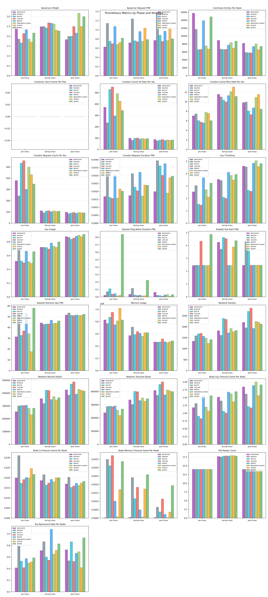
This appendix documents how each metric in this report is calculated. All formulas reference the actual implementation in the ChaosProbe source code.
Every continuous prober classifies each sample into one of three phases based on chaos lifecycle timestamps:
mark_chaos_start() is calledmark_chaos_end() is calledIf the chaos engine does not report an end time, a safety cap prevents the during-chaos window from growing indefinitely:
This dynamic buffer scales with experiment duration while remaining bounded, giving enough time to capture immediate post-fault recovery behaviour in the during-chaos window.
The resilience score (0–100) is derived from LitmusChaos probe verdicts.
Each experiment has a probeSuccessPercentage (the fraction of
probes that passed). The final score is a weighted average across all experiments:
By default all experiments have equal weight (w=1). The report note describes how continuous metrics (recovery speed, latency, error rate, throughput) contribute to differentiation beyond probe verdicts alone.
Measured via the Kubernetes Watch API by observing real-time pod lifecycle events. A recovery cycle is defined as:
Each cycle records three durations:
deletionToScheduled_ms — time from deletion event to the replacement pod being scheduledscheduledToReady_ms — time from scheduling to the pod reaching Ready statustotalRecovery_ms — end-to-end: deletion to ReadySummary statistics across all cycles in a run:
P95 is computed as sorted_values[floor(n × 0.95)].
Latency is measured by executing HTTP requests from inside the cluster via
kubectl exec, using python3 (preferred) or wget as a fallback.
Each target pod is probed independently as a separate vantage point.
Per-route summary (computed over successful samples only):
Error rate:
Cross-pod standard deviation (placement signal):
A higher cross-pod stddev indicates that different pods experienced different latencies, which is a signal of placement-dependent behaviour (e.g., one pod shares a node with the fault target while another does not).
Worst vantage point:
Node-level CPU and memory metrics are fetched from the Kubernetes Metrics API
(metrics.k8s.io/v1beta1) every sampling interval.
Used-nodes-only filtering: only nodes hosting at least one running pod in the target namespace are included. This prevents idle nodes from diluting placement-specific signals. For example, colocate concentrates all pods on a single node — averaging CPU across 3 cluster nodes would show ~30% instead of the actual ~80% on that node.
Per-tick aggregate (across used nodes):
Phase summary:
The same pattern applies to memory metrics. Standard deviation across ticks indicates variability; peak shows the worst-case node pressure observed.
Two I/O subsystems are probed independently:
Redis throughput (via redis-benchmark):
redis-benchmark -q)-q output (else 1000 / ops_per_sec)
Default concurrency saturates the server so node-level CPU contention shows up as a throughput drop. Operations measured: SET and GET.
Disk throughput (via dd):
Sequential I/O with configurable block size. Operations measured: write and read.
Cross-node aggregation (placement signal):
Higher cross-node stddev indicates uneven I/O performance across nodes, which correlates with placement-induced resource contention.